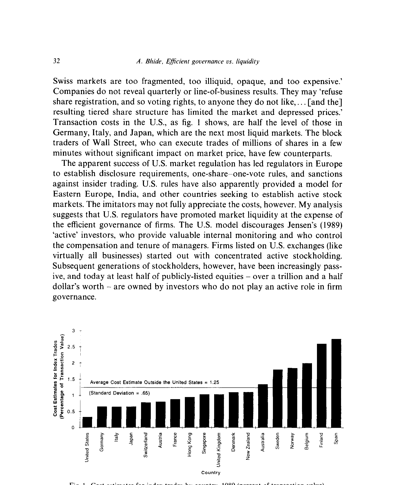
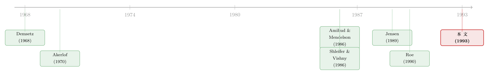

美国股市是全世界最好的市场——但「最好」这两个字，藏着一笔没人记的账
本文读的是 Bhide (1993, Journal of Financial Economics)：股市流动性与公司治理，看似毫不相干，其实是同一枚硬币的两面。能压低交易成本、让你「随时走得掉」的那套监管制度，恰恰也在劝退那些愿意盯着老板、替股东省下代理成本的「积极股东」。美国之所以有那么多股权高度分散、天天换手的公司，正是因为公共政策几十年来一边倒地偏爱流动性，而把治理放在了次要位置——这是流动性的「隐性成本」。
1 一句被反复引用的自夸
1984 年，时任美国证监会（SEC）主席 John Shad 写下一段后来被无数人引用的话：五十年前，大萧条的谷底，这个国家的证券市场一片萎靡；而今天，它们是「人类有史以来最好的资本市场——最宽广、最活跃、最有效率，也最公平」。
这句话很难反驳。你只要看一眼别处的市场就知道了。《经济学人》报道说，多年来投资者一直抱怨瑞士市场「太分散、太不透明、太贵」；公司不披露季度业绩，甚至可以拒绝给它不喜欢的人做股份登记、从而拒绝其投票权。而美国呢？如本文的图 1 所示，美国的交易成本只有德国、意大利、日本——这几个「次活跃」市场——的一半。华尔街那些能在几分钟内吞下几百万股、还不怎么砸价的大宗交易商（block trader），在别的国家几乎找不到对手。

Figure 1: Cost estimates for index trades by country, 1989 (percent of transaction value)
于是各国监管者纷纷来取经：欧洲建立信息披露要求、「一股一票」规则、内幕交易禁令；东欧、印度也把美国当成范本。
但本文作者要泼一盆冷水。他说，模仿者们没看见账单的另一半。美国之所以「最好」，是因为它用监管把流动性做到了极致；而极致的流动性，是以削弱公司治理为代价换来的。
这就是全文的那个核心张力：流动性与治理，是一对此消彼长的冤家。接下来的篇幅，作者要做的只有一件事——把这对冤家之间那根看不见的暗线，一寸一寸地抽出来给你看。
2 一个银行存款的类比，先把直觉讲通
这是一篇没有回归、没有数据表（除了那张各国成本对比图）、也没有正式模型的论文。它的「识别」全靠机制的逻辑。所以作者很聪明地先用一个类比，把直觉钉牢。
设想没有存款保险的世界。一个有钱的储户会怎么做？他会把钱集中存进少数几家他看得懂、盯得住、甚至能施加影响的银行——因为他得为自己的钱负责。
现在政府出场，给小额存款上了保险。会发生什么？有钱人突然有了把存款打散到无数账户的激励：反正都保了，何必费心去盯哪家银行的放贷政策？如果再加一条——对大额存款施加特别的限制（比如提款受限），而拆分存款的交易成本又很低——那么「化整为零」的动机就被进一步放大了。
作者说，美国的证券法对股东做的，是一模一样的事。
这个类比的精髓在于：一项旨在「保护小投资者」的善意制度，会系统性地改变大投资者的行为，把他们从「监督者」变成「搭便车者」。 保护降低了分散持有的风险，于是没人愿意再去承担集中持有、亲自盯梢的成本。
顺着这条线，一个自然的问题是：证券法到底通过哪几个具体的「闸门」，把积极股东一步步劝退、又把市场流动性一点点抬高的？作者拆出了三道闸门。
3 三道闸门：每一道都在「保护小股东」，也都在「驱逐积极股东」
3.1 信息披露
1934 年《证券交易法》要求公开交易的证券登记注册，定期报告董事、高管、大股东及其薪酬，公司财务状况、重大合同……几十年里，SEC 不断加码，从银行控股公司披露、到高管在职消费、到分部（line-of-business）会计，越来越细。
披露的本意是让小股东在投票和交易时「心里有数」。可它同时干了两件事：
第一，它抬高了当积极股东的成本。 坐进董事会的股东要直面 SEC 和集体诉讼（class action）的风险，在买卖股票、向公司提供商品或服务时，受到的约束远多于被动股东。Meyer（1934）当年就写道，依《1934 法》第 20 条，「一个通过持有多数股权——甚至不到多数——而对公司施加支配的股东，可能要为公司的行为承担责任」。换句话说，你越想管事，法律给你套的镣铐就越重。
第二，它降低了分散持有的风险。 可靠、完整、及时的报告，让所有分散的投资者（无论大小）都更安全；公司经理受到「控制权市场」更强的外部约束；控股股东的自我交易（self-dealing）被披露和诉讼威胁压住了。于是大投资者更愿意在很多家公司里各持一点点，而不是在少数几家里当家做主。而分散，正是流动性之源。
一推一拉之间，天平就这样偏了。
3.2 内幕交易规则
《1934 法》第 16 条要求每个高管、董事、10% 以上的持股人定期申报持仓；第 16(b) 条规定他们在任意六个月内的短线利润要「归还公司」；外加 Rule 10b-5。SEC 在这上面执法极其卖力（1966 年的 Texas Gulf Sulfur 案是标志）。
这套规则的功劳，是缓解了信息不对称（information asymmetry）——它让一个买家可以「不必管卖家是谁、动机为何」就放心接盘。用 Demsetz（1968）的话说，这正是交易所交易区别于私下议价的本质：人们愿意「让别人替自己买卖……不必亲自验货就成交」。没有这套规则，流动性市场根本无从谈起。
但反转就藏在这里：流动性的好处，并非人人均沾。 被动、分散的股东享受到了更平的赛场；而积极股东却被绑住了手脚。一个内部人在财报公布前卖任何一只股票都有风险。Roe（1990）一针见血地指出，第 16(b) 条和 Rule 10b-5 这些本意是「阻止内部人交易」的条款，同时也在劝退「内部监督」这个角色本身。
作者的访谈给了一个生动的细节：很多养老金和公司的基金经理，主动拒绝从管理层那里接收任何非公开信息（更别说进董事会了），因为他们认为这会损害自己「保护持仓流动性」的受托责任；机构还会刻意把持股压在 10% 这条触发线之下。于是，许多本可以扮演积极角色的大投资者，反而选择了坚决的被动。
3.3 反操纵规则
《1934 法》第 9、10 条禁止洗售（wash sales）、对敲、虚假陈述等操纵手法，并要求交易所注册、配合执法。这道闸门和前两道不同——它不专门歧视积极股东、不给他们额外的责任。但它通过「让市场更可信」间接地降低了分散化的成本：当市场更值得信任、更有流动性，一个积极股东就能更便宜地把自己的集中持仓换成一个分散组合。
把三道闸门连起来看：第一、二道直接给积极股东「加镣铐」，第三道则替分散化「降成本」。三道闸门方向一致——都在把股权推向分散，把市场推向流动。这就是作者所谓的 U.S. 公共政策的「偏向」（the bias of U.S. public policies）。
接着，一个更深的问题浮上来：这种偏向，是怎么在历史中固化下来的？
4 历史的回火：从「大萧条的善意」到「1970 年代的临门一脚」
作者的历史叙述里有一个被忽视的事实：新政立法的效果，其实被冷藏了几十年。
直到 1960 年代，80% 以上的股票仍由个人直接持有[Schwimmer and Maica（1976）]，而这些人面对着高得吓人的卖出成本——1792 年「梧桐树协议」固定的佣金还在生效，短期资本利得税率超过 70%、长期超过 50%，年度亏损抵扣却被限制在区区 2000 美元。卖出太贵，所以那些通过继承或创业拿到控制性股权的个人和家族，更倾向于「捏着不放」。 在这种环境下，内幕交易限制之类的规则几乎无关痛痒。新政埋下的种子，要等土壤变了才会发芽。
1970 年代，两记「临门一脚」让种子破土：
- 佣金管制的放开。 1975 年《证券法修正案》让佣金完全可议价，大投资者把费率从 1975 年 4 月的每股 26 美分压到了 1986 年的 7.5 美分[总统市场机制特别工作组报告（1988）]。
- 1974 年 ERISA 的通过。 它（连同其他因素）把机构投资者持有的上市股票份额，从 1960 年的 18.7% 推高到 1988 年的 42%。ERISA 一边强制养老金充分融资、一边禁止计划持有发起人自家股票超过 10%——双双指向分散。
而机构投资者，恰恰是 Roe（1990）笔下那群「既受更多积极持股约束、又享更低交易成本」的人。制度、税收、技术合力之下，「积极的集中持有」节节败退，「被动的分散持有」一统天下。
到作者写作时，至少一半的上市股权——超过一万五千亿美元——掌握在不参与公司治理的投资者手里。这就是他所谓「不寻常的美国均衡」：一个由公共政策亲手培育出来的、流动性极高而治理极弱的均衡。
别忘了对照组。在美国之外那些流动性差的市场，内幕交易限制、披露要求、反操纵规则都弱得多——比利时市场被形容为「一个悲伤的、几乎被遗弃的地方」，内幕交易被视为不道德但不违法。欧洲大多数国家直到 1980 年代中期才有内幕交易法。流动性低，恰恰对应着积极股东更容易存活。 这是作者论证里最关键的「跨国变异」。
5 文献脉络：从「柠檬」「价差」「大股东」，到这枚硬币的另一面
要读懂这篇论文的位置，得把它放回三条原本平行的研究线里——而本文的贡献，恰恰是把它们拧成了一股。
第一条线，是信息不对称如何杀死市场。 Akerlof（1970）的「柠檬市场」告诉我们：当卖家比买家懂得多，市场会萎缩甚至崩溃。Demsetz（1968）则从交易成本的角度，刻画了组织化交易所「不必验货即可成交」的本质。这两篇是理解「为什么内幕交易规则能制造流动性」的地基。
第二条线，是流动性的定价。 Amihud and Mendelson（1986）证明，买卖价差（bid-ask spread）会被资产价格补偿——流动性差的资产，要求更高的预期收益。这条线把「流动性」从一个模糊的好词，变成了可以定价、可以权衡的成本量。（关于逆向选择如何抬高「要求回报」，可参见《价差是真的，成本却是假的——逆向选择究竟从哪里抬高了「要求回报」》；而股票的逆向选择如何预言公司信用，则见《评级藏在买卖价差里》。）
第三条线，是大股东与治理。 Shleifer and Vishny（1986）论证大股东在公司控制中的价值，Holderness and Sheehan（1988）研究多数股东的角色，Jensen（1989）那篇名动一时的《公众公司的衰落》（Eclipse of the public corporation）则呼唤「积极投资者」回归——他们提供内部监督、掌控经理的薪酬与去留。Roe（1990）和 Grundfest（1990）进一步指出，是美国的政治与法律限制，亲手把大投资者变成了被动者。

前两条线说「流动性是好的、是有价的」，第三条线说「积极股东是好的、能省代理成本」。而本文的洞见，是发现这两个『好』彼此矛盾：制造流动性的那套制度，正是驱逐积极股东的那套制度。 它把信息不对称、流动性定价、大股东治理三条线，第一次焊在了同一枚硬币的两面上。（关于「积极股权投资者」与监督的关系，可参见《债，是用来「逼」老板的——可如果有人替你盯着，还需要逼吗？》；关于「退出（exit）」这条暗线本身，则见《用脚投票：被炒掉的 CEO 背后，是谁先悄悄离场》。）
6 核心机制，再讲透一遍：exit 便宜了，voice 就贵了
如果要把全文压缩成一句话，那就是：流动性降低了「退出（exit）」的成本，从而抬高了「发声（voice）」的相对代价。
一个不满意的股东有两条路。一条是 voice——留下来，进董事会、施压、监督，承担披露义务、诉讼风险、流动性损失。另一条是 exit——卖掉走人。当市场极度流动、交易成本只有别国一半时，exit 几乎是免费的；而前述三道闸门又把 voice 的成本顶得很高。理性人当然选 exit。
可问题在于，监督是一种公共品。 当 Jensen 笔下的积极股东消失，没人再替全体股东盯着经理，代理成本就回来了。每个投资者「随时走得掉」的个体便利，加总起来，却是整个公司治理体系的失灵。这就是标题里那个「隐性成本（hidden cost）」的全部含义——它不记在任何一张交易成本的账单上，却实实在在地写在了被削弱的治理里。
注意作者的克制：他没有说流动性是坏事，也没有说美国错了。他说的是，流动性的收益必须与治理受损的成本放在一起称重。模仿者们只抄走了「最好的市场」这半句，却把账单的另一半留在了原地。
7 评论与延伸（Q&A + 研究方向）
(a) 几个可能的疑问
Q：这篇 1993 年的论文，没有回归、没有模型，凭什么发在 JFE 上？
它的贡献是概念性的：把两个被默认无关的领域（流动性 vs. 治理）用一条清晰的制度机制连了起来，并提供了一个可证伪的预测——监管越强、流动性越高的市场，积极股东越稀少。它更像一篇「问题论文」而非「答案论文」，为后来一大批关于 exit-voice、机构持股与治理的实证研究埋了引线。在 1993 年，这种「重新框定问题」的工作，价值不亚于一篇漂亮的实证。
Q：因果方向会不会反了？是流动性导致了分散持有，还是分散持有导致了流动性？
这正是本文识别上最大的软肋。作者讲的是一个双向自我强化的故事：监管→分散→流动性，流动性又→exit 便宜→更分散。他用「跨国对比」和「1970 年代政策突变（佣金放开、ERISA）」来暗示因果是从「制度」流向「结果」的，但这都是叙述性的、非计量的。一个真正干净的识别，需要利用某次外生的监管变化做事件研究——这恰恰是后人接着做的事。
Q：作者说披露「抬高了积极股东的成本」，可披露不也降低了所有人的信息劣势、让监督更容易吗？
两种效应同时存在，作者承认这一点。他的论点是净效应：披露带来的「外部监督」（控制权市场、诉讼威胁）替代了「内部监督」（积极股东亲自盯梢），同时披露又把内部监督这个角色的法律成本顶高了。所以披露不是让监督消失，而是把监督的形态从「内部、集中、人格化」推向了「外部、分散、市场化」。是好是坏，取决于你更信任哪一种监督。
Q：流动性高了，控制权市场（敌意收购）不也更活跃、更能约束经理吗？为什么还说治理被削弱？
这是个尖锐的反驳。作者的回应隐含在「内部 vs. 外部监督」的区分里：控制权市场是一种事后的、粗暴的、间歇性的纪律（要等到业绩烂到一定程度才触发收购），而积极股东提供的是事前的、连续的、精细的监督。后者能在问题酿成大祸前就介入，前者只能在事后「拆掉重来」。流动性强化了前者，却牺牲了后者。
Q：那美国的均衡是「错」的吗？是不是应该回到集中持有？
作者刻意不下这个判断。他的措辞是「收益必须与成本放在一起称重」，而不是「流动性弊大于利」。对一个需要海量外部股权融资、需要把储蓄动员进资本市场的经济体，流动性的收益可能确实压过治理的损失。本文的目标不是给出答案，而是逼你把那张被忽略的账单摆上桌。
Q：今天（指数基金、被动投资盛行的时代）这套逻辑还成立吗？
某种意义上更成立了——被动投资把「分散且不发声」推向了极致。但也出现了张力：少数几家巨型资管（BlackRock、Vanguard）反而因持股极度集中，被迫重新扮演起「积极所有者」的角色。本文的框架恰好能解释这种回摆：当持有变得足够集中，exit 不再便宜（你卖不掉那么大的盘子），voice 就重新变得划算。
(b) 几个可能的研究问题与提案
1. 把「流动性—治理权衡」搬到公司债市场。
【经济故事】本文讲的是股票。但公司债的持有人同样面临 exit-voice 抉择：债券基金可以随时卖出（exit），也可以在重组谈判中积极发声（voice）。债券市场流动性的改善（如 TRACE 透明度实验）是否削弱了债权人的积极监督？【可行性】中。需要 TRACE 逐笔交易数据 + 债权人在违约重组中的行为（DIP 融资、契约谈判记录），用 TRACE 分阶段引入做事件研究。识别比股票更干净，因为透明度改革有明确的时间断点。
2. 外资持有人：是「流动性的化身」，还是被迫的被动者？
【经济故事】外资常被指为「蝗虫」式的纯流动性交易者——来去匆匆、不参与治理。但他们也可能因信息劣势和监管限制而被迫被动。本文的框架预测：流动性越高的市场，越能吸引这类「不发声」的外资。能否用各国流动性差异，解释外资的「发声倾向」？【可行性】中高。可结合跨国机构持仓数据与投票记录。这与《外资真是「蝗虫」吗？》直接对话，也贴合我自己关于外资与公司债流动性的研究主线。
3. 用一次外生监管变化，给本文的因果做一次干净识别。
【经济故事】本文的最大软肋是因果。能否找一次「只改变流动性、不直接改变治理义务」的监管冲击（如某国突然引入做市商制度、或缩小最小报价单位 tick size），看持股集中度与积极股东参与度是否随之下降？【可行性】中。tick size 改革（如美国 2016 Tick Size Pilot）是理想的外生冲击，难点在于要把「流动性渠道」和「其他同时变化的渠道」分离开。
4. 量化「隐性成本」到底有多大。
【经济故事】本文只说成本「存在」，没说「多大」。能否构建一个结构模型，把「流动性收益（更低的要求回报，à la Amihud-Mendelson）」与「治理损失（更高的代理成本）」放进同一个框架，算出某个市场的净福利？【可行性】低到中。理论上诱人，但治理损失极难量化、代理成本的反事实几乎无法观测，容易沦为「参数说了算」。
5. exit 与 voice 的替代弹性，能不能直接估出来？
【经济故事】本文的核心是「exit 便宜→voice 变贵」。能否用机构在「卖出 vs. 提交股东提案/反对票」之间的实际选择，估计二者的替代弹性，并检验它是否随流动性上升而上升？【可行性】中。需要机构持仓变动（exit 的代理变量）+ 代理投票/提案数据（voice 的代理变量）。识别在于找到只影响 exit 成本的外生冲击。
8 参考文献与我的判断
我的判断。 这篇论文的真正贡献，不在任何一个数字，而在一次框架的重写：它告诉你，「流动性」和「治理」这两个分属市场微观结构与公司金融的概念，其实由同一套监管制度同时决定，方向相反。这种「把两个抽屉里的东西放到一杆秤上称」的洞见，正是它历久弥新的原因——三十年后，关于被动投资、共同所有权、机构发声的整场辩论，都还在这个框架里打转。
但它的软肋也很诚实地摆在那里：全文几乎没有计量识别。因果方向（制度→流动性→分散，还是反过来）靠的是叙述和跨国对照，而非外生变异；「治理受损」这个核心成本始终停留在定性层面，没有一个数字。作者自己也清楚——他把论文的姿态定位为「权衡」而非「定论」。
我接下来最想看到的，是有人用一次干净的、只动流动性的外生监管冲击，把这条因果链坐实，并第一次给「隐性成本」标上一个价。在这一点上，公司债市场（透明度有明确的政策断点）可能比股票市场更适合做这件事——这也正是我自己想往下走的方向。
参考文献
- Akerlof, G. (1970). The Market for 'Lemons': Quality Uncertainty and the Market Mechanism. Quarterly Journal of Economics 84(3), 488–500.
- Amihud, Y. and Mendelson, H. (1986). Asset Pricing and the Bid-Ask Spread. Journal of Financial Economics 17(2), 223–249.
- Baskin, J. B. (1988). The Development of Corporate Financial Markets in Britain and the United States, 1600–1914. Business History Review 62, 199.
- Bhide, A. (1993). The Hidden Costs of Stock Market Liquidity. Journal of Financial Economics 34(1), 31–51.
- Demsetz, H. (1968). The Cost of Transactions. Quarterly Journal of Economics 82(1), 33–53.
- Grundfest, J. A. (1990). Subordination of American Capital. Journal of Financial Economics 27(1), 89–114.
- Holderness, C. G. and Sheehan, D. P. (1988). The Role of Majority Shareholders in Publicly Held Corporations. Journal of Financial Economics 20, 317–346.
- Jensen, M. C. (1989). Eclipse of the Public Corporation. Harvard Business Review, Sept.–Oct., 61–74.
- Roe, M. (1990). Political and Legal Restraints on Ownership and Control of Public Companies. Journal of Financial Economics 27(1), 7–41.
- Shleifer, A. and Vishny, R. W. (1986). Large Shareholders and Corporate Control. Journal of Political Economy 94(3), 461–488.